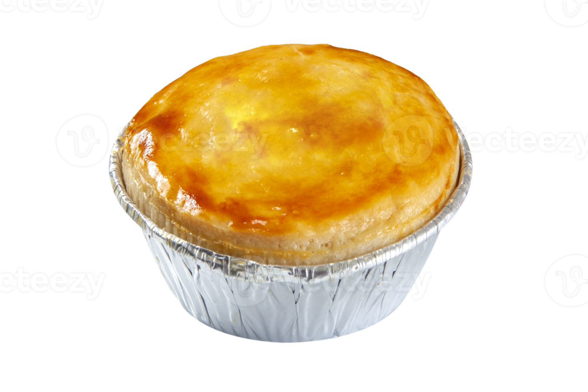

Empadão de Frango
Ingredientes:
- 1 kg de peito de frango desfiado
- 1 massa de empada
- 2 tomates picados
- 1 cebola picada
- Sal e pimenta a gosto
- Azeite para refogar
Modo de Preparo:
Refogue a cebola e o tomate no azeite. Acrescente o frango desfiado e tempere a gosto. Coloque a mistura na massa e asse por 40 minutos a 180°C.
Coxinha de Frango
Ingredientes:
- 500g de peito de frango cozido e desfiado
- 500g de massa para coxinha
- 1 cebola picada
- Temperos a gosto
- Óleo para fritar
Modo de Preparo:
Recheie a massa com o frango e modele as coxinhas. Frite em óleo quente até ficarem douradas e crocantes.
Esfiha de Carne
Ingredientes:
- 500g de carne moída
- 1 cebola picada
- 1 pacote de massa para esfiha
- Temperos a gosto
Modo de Preparo:
Refogue a carne com cebola e os temperos. Coloque sobre a massa e asse em forno pré-aquecido por 25 minutos.